Yaadain 2
یادیںA living family tree for Urdu-speaking elders with memory loss.
Yaadain · syahra712
35 screens · one phone plays the whole story
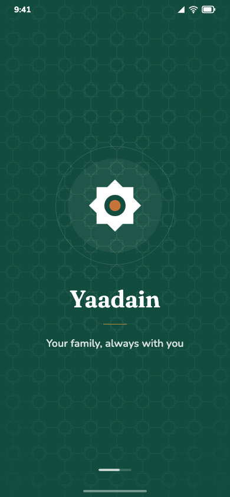
A family can slip out of a memory, and he out of theirs.
“Yaadain keeps the family from disappearing from the elder’s memory, and keeps the elder from disappearing from the family.”
A living family tree, in the family’s own voice.
Every relative is three things, kept together and kept on the device. Yaadain plays only what the family actually recorded. It never generates speech or invents a memory.
One app. Three people.
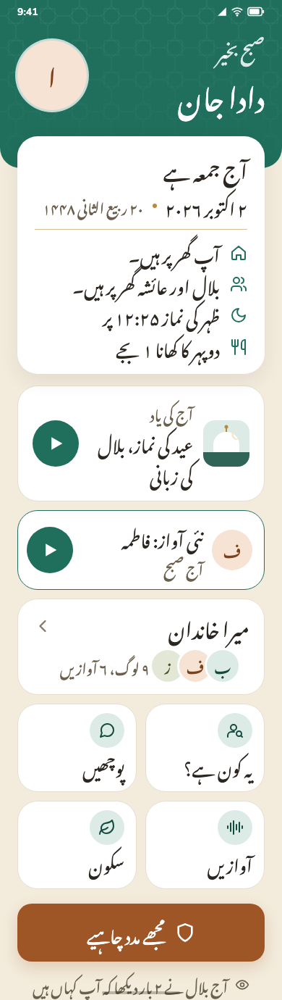
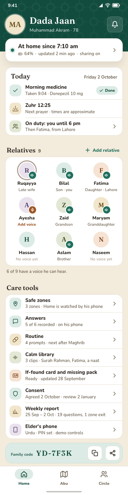
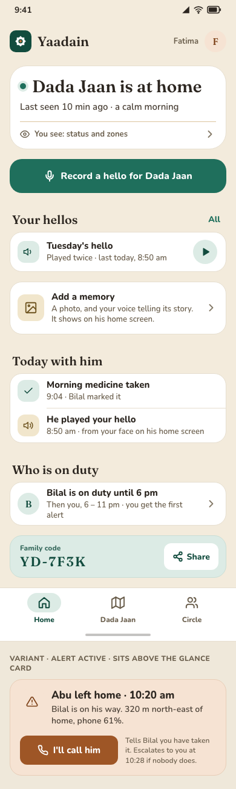
Entirely Urdu. Never a quiz.
Noto Nastaliq, right to left, Urdu digits. He asks from six fixed questions, answered in the family’s own words and voices, and every ask is logged for the weekly report.
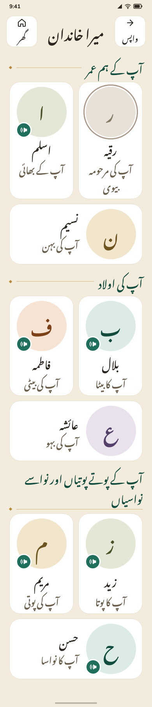
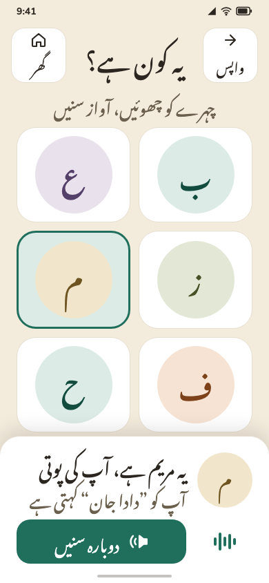
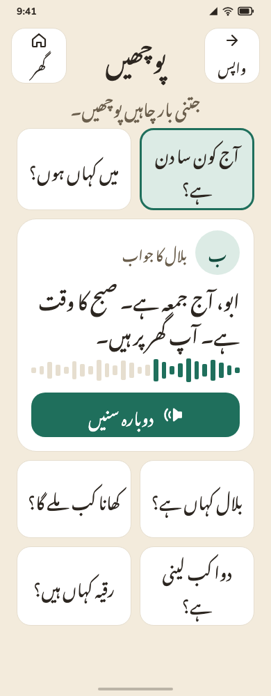
He walks out. Bilal is on his way.
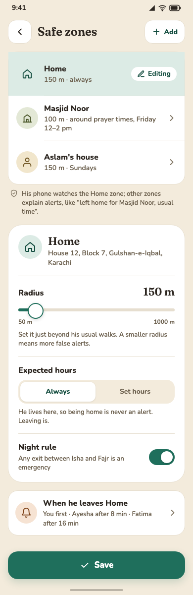
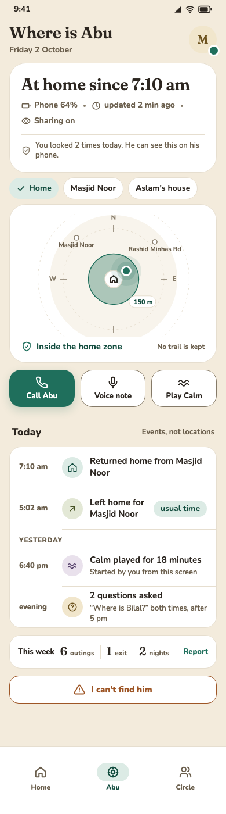
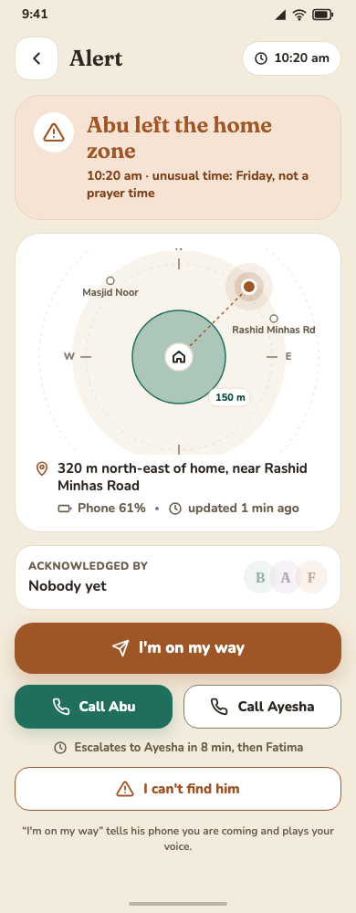
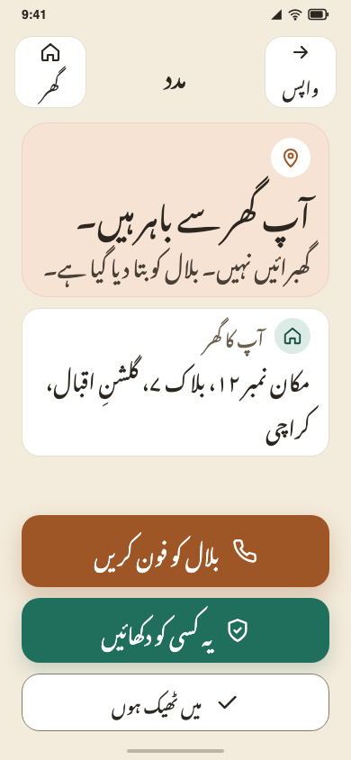
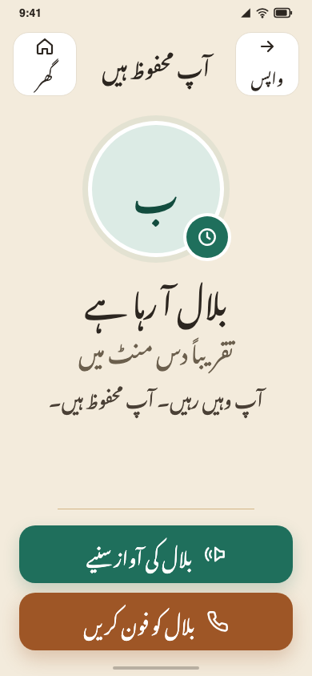
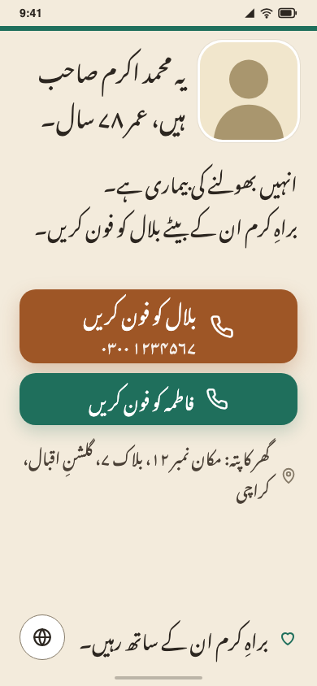
Written on a calm day. Ready on the worst one.
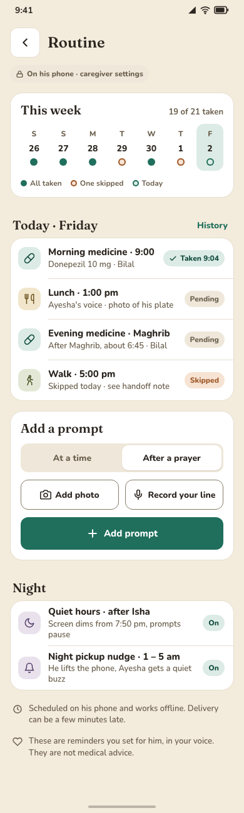
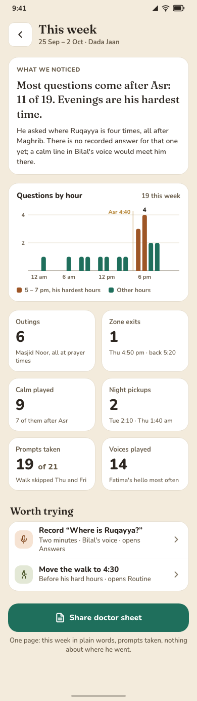
Built for his hands and his eyes.
Touch targets
Every target is 56px or larger. Main actions are 64 to 80px.
Urdu, first
No Urdu text is smaller than 20px, set in Noto Nastaliq, right to left.
Language per screen
Elder screens are all Urdu, family screens all English. An automated script-mixing check enforces it.
Clay action
One warm clay colour marks the single most important action on a screen.
Same back, same home
Every screen has the same back and home buttons. Red is kept for a true emergency.
He agreed. It stays on his phone.
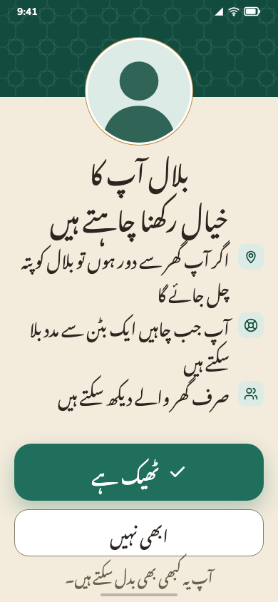
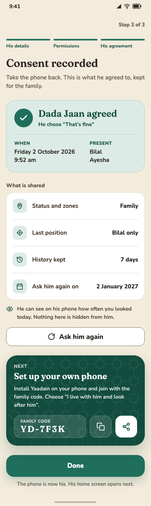
One tracking interface. Two sources.
One phone plays the whole story.
Three short clips, played in order. Choose one to start there.
Built, tested, and honest about what is not on.
In the build today
- 35 screensEvery phone in the family, all built into the app.
- The Android demoThe release plays the whole story on one phone.
- 93 tests passingIncluding a screenshot test of every screen.
Next
- Connect Firebase syncSharing his status between two phones is written. It is switched off until a Firebase project is connected.
Later
- Spoken Urdu questionsA script-tolerant matcher, with unit tests, is kept for spoken questions. It is not wired to the new screens yet.
Keep the family in his memory.
Every relative is a face, their real voice, and their relationship to the elder, kept entirely on the device.
github.com/syahra712/yaadainYaadain · syahra712